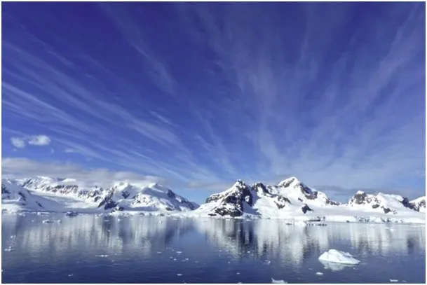
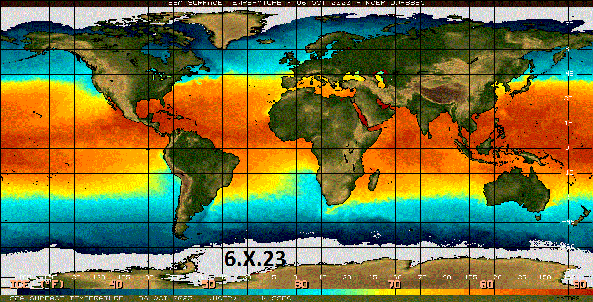
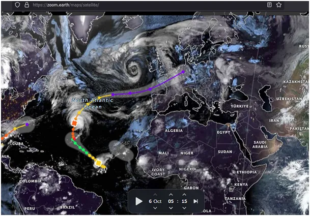
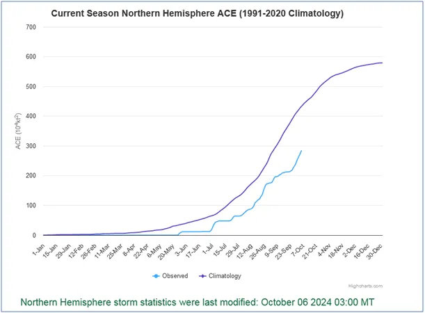

Temperatura powierzchni oceanów. 6.X.2024 vs. rok wcześniej.
Szybko wychładza się Morze Śródziemne, szczególnie na zachodzie, to skutek północnych, zimnych wiatrów, jakie tam docierają przez dolinę Rodanu i okolice Zatoki Biskajskiej w zachodniej Francji. Radykalnie zimniejszy Atlantyk niż przed rokiem wokół Hiszpanii i na zachodnich wybrzeżach Afryki zapowiada po wczesnej wiośnie wczesną zimę w Europie. W ten oto sposób ziemski termostat w postaci cyklonów (huraganów na Atlantyku i tajfunów na Pacyfiku) oddaje bezpowrotnie zgromadzoną latem energię w czeliście skrajnie zimnego Kosmosu.

Bilans energii cyklonów na półkuli północnej jest o 35% niższy niż w latach poprzednich, a na Atlantyku w normie. Tu przypomnijmy, że ten wskaźnik od dwóch dekad spada, co świadczy o spadku łącznej energii termicznej planety.

Przez środek Atlantyku do Europy zmierza huragan Kirk, na środku oceanu był mocny, klasy H3, z wiatrem około 200 km/h. Jako silny niż, dotrze do Francji około środy 9 października, wszyscy poczujemy jego skutki w postaci wiatrów i opadów.

Kirk będzie przed sobą pchał ciepłe, południowe powietrze, ale już za tydzień jego tylne skrzydło ściągnie z północy arktyczną fale chłodu. Nie tylko z północy nadciąga zima. Mimo wiosennej pory na półkuli południowej zasięg pokrywy lodowej wokół Antarktydy na południowym Atlantyku jest o rząd tysiąca kilometrów większy niż rok temu, a z badań długoterminowych wiemy, że od ponad dekady szelf lodowy wokół Antarktydy rośnie. Ziemia płonie !Wieczorem mapki śniegowe pokażą nam, jaki zasięg ma już zima na północy.
Paweł Klimczewski